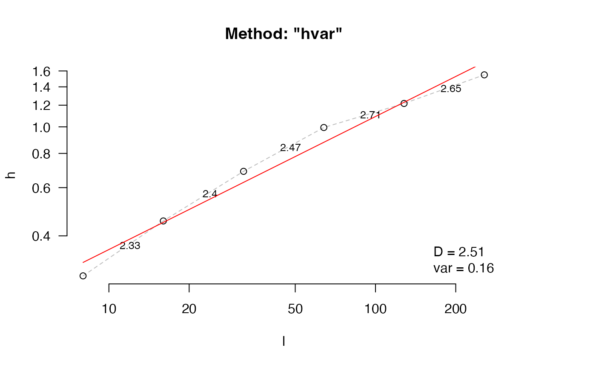
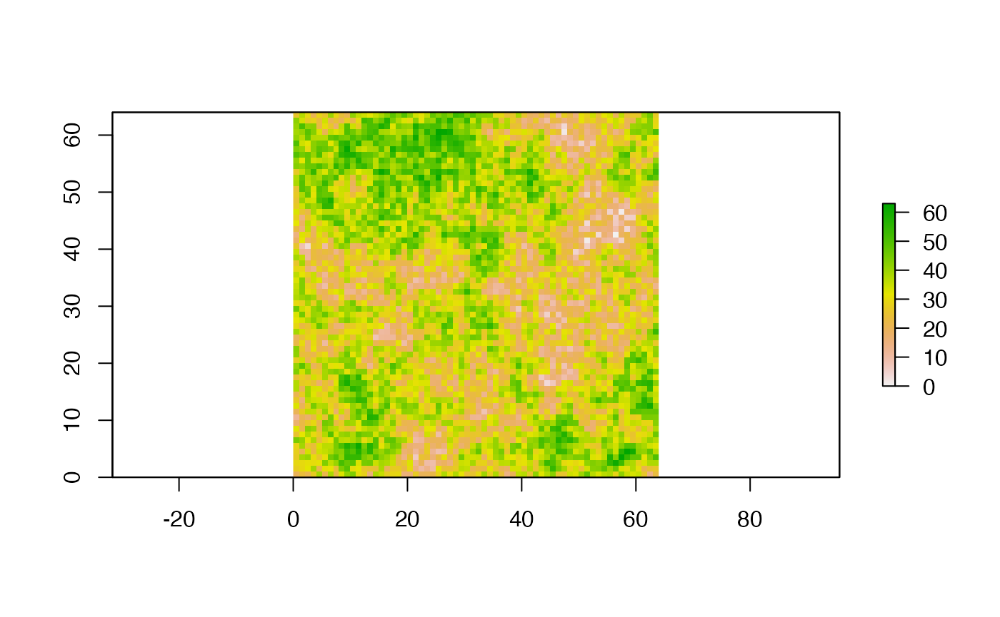

Metrics of fractal dimension
fractal_intro.Rmd
library(habtools)
library(raster)
#> Loading required package: sp
#>
#> Attaching package: 'raster'
#> The following object is masked from 'package:habtools':
#>
#> extent
library(dplyr)
#>
#> Attaching package: 'dplyr'
#> The following objects are masked from 'package:raster':
#>
#> intersect, select, union
#> The following objects are masked from 'package:stats':
#>
#> filter, lag
#> The following objects are masked from 'package:base':
#>
#> intersect, setdiff, setequal, union
library(ggplot2)In this vignette, we give a brief overview of fractal dimension
methods in habtools. We highlight that each method has
inherent biases and should be used cautiously and consistently. For
example, some methods are sensitive to particular elements, like
outliers, z-scaling or drop-offs, where others are invariant to
them.
Methods
There are currently five fractal dimension methods in
habtools: hvar, sd,
area, cubes and boxes. The first
four can be applied to DEMs. area and cubes
can be applied to meshes. boxes can only be applied to 2D
outlines, such as generated using the mesh_to_2D function
that generates the planar outline of a 3D mesh. There are detailed help
files explain how they work and point to references.
The length vectors (lvec)
In general, fractal dimension is estimated by measuring values (e.g.,
counts of cubes, heights, areas) at a sequence of different resolutions
or length scales, and then finding the slope between these scales and
the measured values. Therefore, selecting a sensible sequence of scales
is critical, and can differ among methods. If you don’t enter an
lvec, the function will estimate one for you based on some
rules of thumb.
# simulate fractal terrain
surf <- sim_terrain(n=128, smoothness=0.5)
plot(surf)
# fractal dimension using height variation method
fd(surf, method="hvar")
#> lvec is set to c(8, 16, 32, 64, 128).
#> [1] 2.487394For example the height variation method will generate a log2 sequence of length between the resolution x 10 and the extent. So in this example,
The largest scale L is typically that of the object of
surface. For example, for a section of terrain 1 x 1 m, L would be 1 if
using the height range of .
All fractal dimension methods in habtools will
automatically generate a vector of scales (lvec) based on
rules of thumb, which differ among methods.
# simulate fractal terrain
surf <- sim_terrain(n = 256, smoothness = 0.5)
plot(surf)
# fractal dimension using height variation method
fd(surf, method="hvar", diagnose = TRUE)
#> lvec is set to c(8, 16, 32, 64, 128, 256).
#> $D
#> [1] 2.523926
#>
#> $data
#> l h
#> 1 8 0.2788028
#> 2 16 0.4317595
#> 3 32 0.6174781
#> 4 64 0.8370791
#> 5 128 1.0647181
#> 6 256 1.5376634
#>
#> $lvec
#> [1] 8 16 32 64 128 256
#>
#> $D_vec
#> [1] 2.369017 2.483840 2.561024 2.652964 2.469732
#>
#> $var
#> [1] 0.1062876
#>
#> $method
#> [1] "hvar"Fractal terrain
The first simulated surface included with habtools
utilizes the diamond-square algorithm. Here is a relatively flat
simulated terrain.
# simulate 64 by 64 unit surface with smoothness of 1 (less fractal)
surf1 <- sim_terrain(64, 1)
plot(surf1)Here are estimates of fractal dimension for the three methods.
# height variation
fd(surf1, method = "hvar")
#> lvec is set to c(8, 16, 32, 64).
#> [1] 2.326891
# standard deviation
fd(surf1, method = "sd")
#> lvec is set to c(8, 16, 32, 64).
#> [1] 2.39469
# area
fd(surf1, method = "area")
#> lvec is set to c(2, 4, 8, 16).
#> [1] 2.000063
# cube counting
fd(surf1, method = "cubes")
#> lvec is set to c(8, 16, 32, 64).
#> [1] 2The height variation method estimates that fractal dimension is high,
whereas the other two method estimate that it is low. This is because
the height range method is invariant to z-scaling. To demonstrate,
height of surf1 is scaled to equal to the extent.
# standardize the surface height to match the extent (i.e., 63 midpoints)
values(surf1) <- values(surf1) * ((64-1) / diff(range(values(surf1))))
range(values(surf1))
#> [1] 0 63
plot(surf1)Here are estimates of fractal dimension for the three methods.
# height variation
fd(surf1, method = "hvar")
#> lvec is set to c(8, 16, 32, 64).
#> [1] 2.326891
# standard deviation
fd(surf1, method = "sd")
#> lvec is set to c(8, 16, 32, 64).
#> [1] 2.39469
# area
fd(surf1, method = "area")
#> lvec is set to c(2, 4, 8, 16).
#> [1] 2.216242
# cube counting
fd(surf1, method = "cubes")
#> lvec is set to c(8, 16, 32, 64).
#> [1] 2.531071You can see that the height variation estimate remains unchanged, whereas the area and cubes estimates increase. We believe this dichotomy raises an underlying philosophical question about fractal surfaces: does the fractal dimension of an surface change if it is scaled along one dimension?
There are a variety of ways to explore this question. Let’s start by simulating a rough terrain.
# simulate 64 by 64 unit surface with smoothness of 0 (more fractal)
surf2 <- sim_terrain(64, 0)
plot(surf2)
Here are estimates of fractal dimension for the three methods.
# height variation
fd(surf2, method = "hvar")
#> lvec is set to c(8, 16, 32, 64).
#> [1] 2.721656
# standard deviation
fd(surf2, method = "sd")
#> lvec is set to c(8, 16, 32, 64).
#> [1] 2.894103
# area
fd(surf2, method = "area")
#> lvec is set to c(2, 4, 8, 16).
#> [1] 2.017233
# cube counting
fd(surf2, method = "cubes")
#> lvec is set to c(8, 16, 32, 64).
#> [1] 2The height variation estimate for fractal dimension is high (closer to 3), the area estimate is the same as for the smooth terrain (close to 2), and the cubes estimate is somewhere in-between. This suggests that invariance to z-scaling is better at estimating surface roughness. Let’s now scale the rough terrain.
# standardize the surface height to match the extent (i.e., 63 midpoints)
values(surf2) <- values(surf2) * ((64-1) / diff(range(values(surf2))))
range(values(surf2))
#> [1] 0 63
plot(surf2) Here are estimates of fractal dimension for the three methods.
# height variation
fd(surf2, method = "hvar")
#> lvec is set to c(8, 16, 32, 64).
#> [1] 2.721656
# area
fd(surf2, method = "area")
#> lvec is set to c(2, 4, 8, 16).
#> [1] 2.538922
# cube counting
fd(surf2, method = "cubes")
#> lvec is set to c(8, 16, 32, 64).
#> [1] 2.831853When the z-values are scaled, the area estimate approaches the height variation estimate; the latter of which is unchanged by the transformation. Let’s simulate multiple surfaces